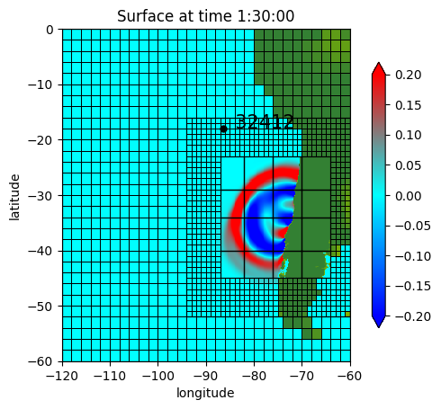

< < < Index > > >

Image source: /Users/rjl/clawpack_src/clawpack_master/geoclaw/examples/tsunami/chile2010/_plots/frame0003fig0.png
Other figures at this time: Surface Test All Figures
Other frames: 0 1 2 3 All Frames